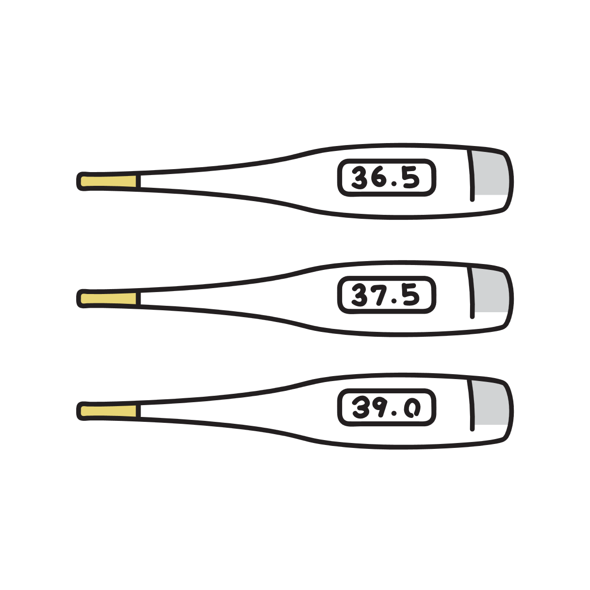

熱が出ると涙が出るのはなぜ？
発熱しているとき、目がしょぼしょぼしたり、涙が勝手に出てくることがあります。
風邪のときに特に多く、「泣いているわけではないのに涙が止まらない」と感じることもあります。
これは感情とは関係なく、体の防御反応や環境変化が重なって起きる現象です。
涙は「感情だけ」で出ているわけではない
涙というと「悲しいときに出るもの」という印象がありますが、実際にはそれだけではありません。
目の表面を守るために常に少量の涙が分泌されており、異物や乾燥に反応して増える仕組みがあります。
つまり涙は、目を保護するための「自動調整機能」のような役割も持っています。
発熱時は目や鼻が乾燥しやすくなる
風邪や発熱のときは、鼻や喉の粘膜に炎症が起きています。
この炎症によって鼻づまりや乾燥が起きると、目の環境も影響を受けやすくなります。
特に空気の流れが悪くなると、目の表面が乾きやすくなり、涙の分泌が増えることがあります。
これは「潤いが足りないから補おうとする」自然な反応です。

体の神経反応が涙を増やすこともある
発熱時には自律神経のバランスが変化しやすくなります。
この影響で、涙腺の働きが少し過敏になり、涙が出やすくなることがあります。
また、目や鼻の粘膜は同じ神経系でつながっているため、鼻の炎症が涙の増加に影響することもあります。
「目の病気」ではなく一時的な反応のことが多い
発熱に伴う涙は、基本的には体調が戻るにつれて自然に落ち着いていきます。
そのため、多くの場合は目そのものの病気というより、全身状態の変化に伴う一時的な反応です。
ただし、強い目の痛みや視力低下を伴う場合は別の原因の可能性もあります。
涙が出るのは「悪いこと」ではない
涙は単なる不快な症状ではなく、目を守るための仕組みでもあります。
乾燥や刺激から目の表面を守るために分泌が増えることで、結果的に涙があふれて見えることがあります。
つまり、体が「目を守ろうとしている状態」とも言えます。
受診を考えたほうがよいケース
発熱時の涙は一般的な反応ですが、以下のような場合は注意が必要です。
目の強い痛み、膿のような分泌物、急な視力低下、片目だけ強く症状が出る場合などです。
こうした場合は、単なる風邪とは別の原因が隠れていることもあります。
参考情報と注意点
涙の増加にはさまざまな原因があります。症状が長引く場合や強い痛みがある場合は医療機関への相談も検討してください。
関連アイテム
目の乾燥対策グッズや加湿アイテムなどを、今後ここに追加する予定です。